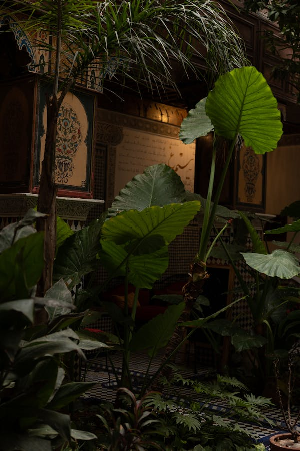
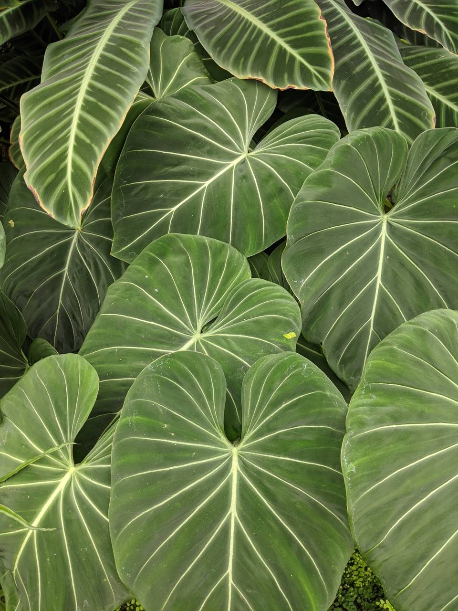
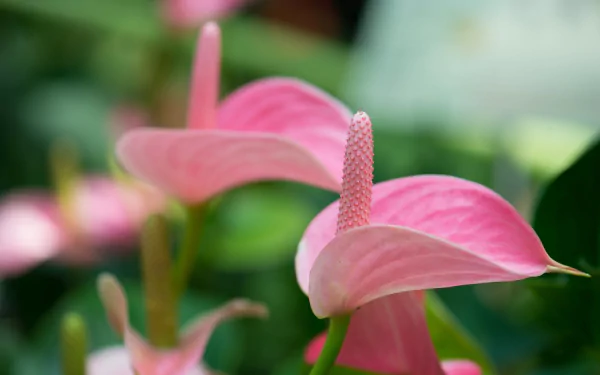

Care
Alocasia
Philodendron
Monstera
Anthurium
Hoya
Syngonium

Alocasia
Alocasia are stunning tropical plants with arrowhead-shaped leaves. Find a warm, bright area in your home for these beauties.
Native to the tropical area in the South Pacific Islands, particularly the Philippines, Alocasia plants appreciate the extra humidity a kitchen or bathroom can offer.
Your Alocasia will thrive in a spot with medium to bright indirect light. Avoid direct sunlight, which can cause leaf scorch.
It is not tolerant of low-light situations.
Water your Alocasia when 25-50% of the soil volume is dry.
Water until liquid flows through the drainage hole at the bottom of the pot and discard any water that has accumulated in the saucer.
Alocasia is susceptible to root rot, so avoid overwatering.

Philodendron
Philodendrons are beautiful plants that grow vines with heart-shaped leaves.
Philodendron is a versatile plant because it can thrive in varying light levels.
However, the perfect light for the philodendron should resemble the light exposure it gets in nature: bright and indirect sunlight.
Watering your philodendron is quite simple: let the top of the soil dry out between waterings. However, don't let more of it dry out as philodendrons grow quite quickly.
When they're growing quickly, they like to absorb a lot of moisture from the soil.

Monstera
Monsteras are very recognizable plants with big and beautiful leaves.
They can be tough to take care of if you live in a colder climate, but even then, you can be successful with these plants.
This is a tropical plant and thrives if you can give it the light it gets in its native environment.
In nature, it's on the ground under large trees in very sunny areas, so this plant loves bright, indirect sunlight.
When it comes to watering, it needs to be watered as soon as the soil at the top of the pot is dry.
You can check this by using a moisture meter or your finger. If the top 5 cm (2 inches) is dry, it's time to water your plant.
It's best to not let the soil dry out too much because its leaves will start to droop.

Anthurium
The Anthurium is a beautiful plant from the rain forests of South-America and comes in many shapes and sizes.
The Anthurium's natural growing environment is a warm place that gets a lot of sun.
You can help to give your Anthurium the perfect sunlight exposure by finding a bright spot in your house where the plant won't get any direct sunlight exposure.
The direct sunlight will turn your Anthurium's leaves yellow and leave sunburn spots.
The Anthurium thrives in soil that's permanently moist.
You can check whether the soil is still moist by sticking your finger in the top inch of soil.
If the soil sticks to your finger, it's still moist and you don't have to water your plant yet.
If the soil falls off easily, it's time to water your plant.

Hoya
The Hoya is a beautiful plant that grows vines and flowers, but needs the attention of a succulent.
It's very beginner-friendly, pet-friendly, and does well in most place in your house.
Hoya plants love bright indirect sunlight, but direct sunlight is too much.
If you do want to put your Hoya in a spot where it gets some direct sunlight, make sure it only gets direct sunlight in the mornings.
This type of sunlight isn't strong enough to burn the leaves on your Hoya.
On average, you should water your Hoya once every 14 days in the spring and summer.
Before you water your plant, it's important to check whether the soil is completely dry.
During the winter months, you should water your Hoya every 3 to 4 weeks.
If you notice the wrinkling in the leaves and you haven't watered your Hoya for 14 days, you can water it a little earlier.

Syngonium
Syngoniums are beginner-friendly tropical houseplants for those of you who'd like to learn to take care of tropical houseplants.
The perfect sunlight exposure for this wonderful type of plant is bright but indirect, sunlight.
It's important to avoid exposing this plant to direct sunlight because that will cause sunburns on its leaves.
Because these plants rely on the soil to give them plenty of moisture, you'll need to water it regularly.
You shouldn't let the soil dry out completely, but you also don't want the soil to be wet for too long.
On average, you should water this plant around once per week in the spring and summer.
During the fall and winter, you should water them less; around every 10 days to 2 weeks.